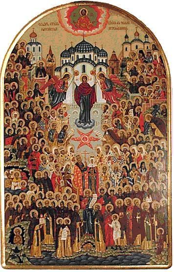

Second Sunday,
All the Saints who have shone forth in the land of Russia.
Mt. 4:18-23
Rom. 2:10-16
Last Sunday, together with the whole Church, we celebrated the memory of all the saints who from the beginning of the ages have pleased God. And today we keep, in a special way, the memory of the saints who have shone forth in the land of Russia.
"Glory and honour and peace to every man that worketh good!"
But just as true love for all mankind begins with love for one's own kin, so also true veneration of all the saints is impossible without venerating, first of all, the saints of our own land. We can visit the places of their struggles, places which their spirit visits to this day. We can pray at their relics, which have been glorified by many miracles.
We reverently gaze upon objects once hallowed by their touch; we draw healing water from the springs that sprang up at their prayers. One could name more than one city standing on the site of a poor little cell once built by a solitary hermit. The venerable one would withdraw into the wilderness forests to labour for the one God alone, and the world would humbly stretch out after him; people settled round about in order to have his spiritual guidance. And little by little a monastery of white stone would arise, and after it a whole city.
Humble monks dreamed of solitary struggles and prayers, but out of obedience they became bishops, metropolitans, patriarchs. They gathered the people around Christ, and in hard years of trial Christian soldiers knew that they were defending not so much a temporal earthly kingdom as the saving Orthodox faith, without which it is impossible to inherit the Kingdom of Heaven either.
Thus our saints strove to please God, according to the commandment, and God granted them to serve the whole people as well. They wished to labour only for the Kingdom of Heaven, and the Lord through them bestowed good things upon the earthly kingdom too. Here the eternal law of Christ was at work: "But seek ye first the Kingdom of God, and His righteousness; and all these things shall be added unto you" (Mt. 6:33).
All of these are our own countrymen, people just like us. They all began by occupying themselves with the very same earthly affairs with which we occupy ourselves. Where, then, did they get that for which we glorify them and at which we marvel?.. It is simply that each one of them at some point met the Lord, and the Lord simply called him, as He called the first Apostles from their fishing: "Follow Me"... "And they straightway left their nets, and followed Him."